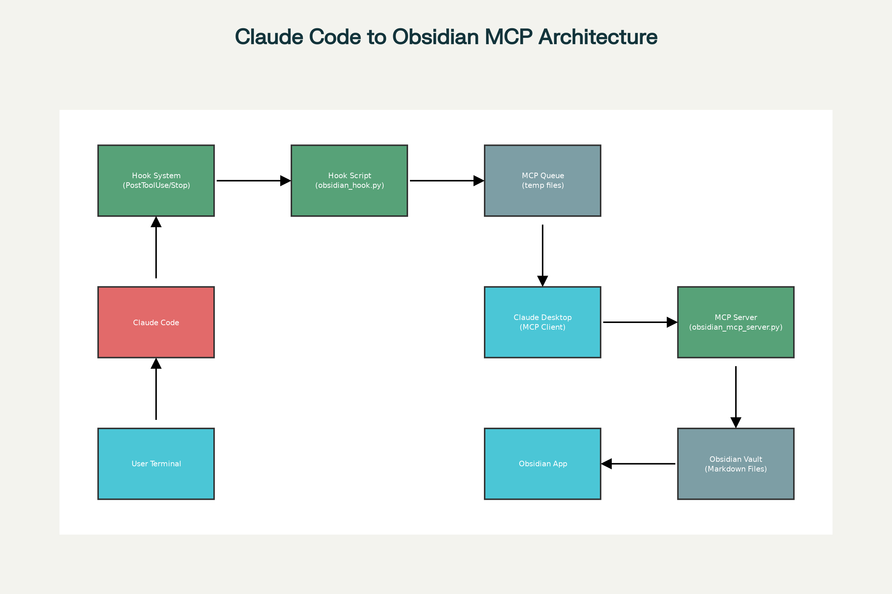

📅 Saturday, Aug 2, 2025
⏰ 00:00:00
🔄 Saturday, Aug 2, 2025 00:00:00
📖 Reading time: 6 min

After months of hearing about Model Context Protocol (MCP) servers and thinking “that’s cool, but what would I actually build?”, I finally had my moment. Like many developers, there’s no better motivation to work on a project than scratching your own itch.
Mine was simple: I kept losing valuable Claude Code responses. Those perfectly crafted solutions, detailed explanations, and code snippets would disappear into the void of my terminal’s scrollback buffer. Meanwhile, my Obsidian vault sat there, begging to become the permanent home for this knowledge.
That’s when it clicked - I needed to build an MCP server that automatically saves Claude Code responses to Obsidian.
Working with Claude Code daily, I noticed a pattern: I’d get fantastic responses—detailed code explanations, debugging insights, architectural suggestions—and then they’d vanish. Copy-pasting to Obsidian manually was tedious and I’d inevitably forget to do it.
What I needed was automatic capture that preserved context, added proper metadata, and organized everything in my existing knowledge management system.
The Itch Every time I scrolled back through my terminal looking for that perfect Claude response from yesterday, I knew I had to build something.
The architecture turned out simpler than I initially thought:
No hooks required—the MCP server makes tools available that Claude Code can use naturally during conversations.
What I actually built was far more polished than my initial hook-based approach. The final MCP server provides a clean, direct integration where you simply ask Claude Code to save content to Obsidian.
python3 install.py handles everythingThe core insight was making it conversational—instead of automatic hooks, you explicitly ask Claude to save content:
The server provides four main tools:
Instead of hooks, I made it conversational. You simply ask Claude Code:
"Create a security review of the authentication system and save to Obsidian"
"Generate API documentation and save it to Obsidian as a report"
"Document the database schema and save to Obsidian"
Claude Code automatically uses the save_to_obsidian tool to format and save content to your vault with proper structure and metadata.
Each project can have custom settings in .claude/obsidian.json:
{
"folder": "Projects/My Awesome Project",
"templates": {
"report": "# {title}\n\n**📋 Report Generated**\n- **Date:** {timestamp}\n- **Project:** {project}\n\n{content}",
"review": "# Code Review: {title}\n\n**👀 Review Details**\n- **Date:** {timestamp}\n- **Project:** {project}\n\n{content}"
}
}
The server generates properly structured files with frontmatter:
---
created: 2025-01-27T14:30:22.123456
source: claude-code
tags: [claude-code, report, project-name]
---
# Security Review: Authentication System
**📋 Report Generated**
- **Date:** 2025-01-27 14:30:22
- **Project:** my-awesome-project
- **Type:** Technical Report
---
[Your content here, formatted according to the template]
---
*Generated by Claude Code*
One of the best features is the template system. Different content types get different formatting:
{
"templates": {
"security-review": "# 🔒 Security Review: {title}\n\n**Reviewed by:** Claude Code\n**Date:** {timestamp}\n\n## Executive Summary\n\n{content}",
"api-docs": "# 📚 API Documentation: {title}\n\n**Generated:** {timestamp}\n**Version:** 1.0\n\n{content}"
}
}
I built an interactive installer that handles everything:
git clone https://github.com/your-username/obsidian-mcp-server.git
cd obsidian-mcp-server
python3 install.py
The installer:
~/.claude/Add project-specific configuration to any existing project:
python3 install.py --project-config
This creates a .claude/obsidian.json file in your current project with custom folder and template settings.
The Model Context Protocol documentation made it seem complex, but the reality is refreshingly simple. You define tools, handle requests, and return responses. The Python SDK abstracts away the protocol details.
My initial hook-based approach felt clever, but the conversational approach proved better. Being explicit about what to save gives you control over content and context.
The template system was a game-changer. Different content types (reports, reviews, notes) get appropriate formatting automatically. No more manually structuring every saved item.
Pro Tip Start with simple templates and evolve them. I began with basic frontmatter and gradually added project-specific formatting.
Now I can tell Claude Code “generate a security analysis and save it to Obsidian” and get a perfectly formatted document in my vault. The project-specific configuration means each project’s documentation lands in the right folder with the right formatting.
More importantly, I scratched my itch. That nagging feeling of losing valuable information is gone. My knowledge management system finally captures the full context of my development workflow.
A few things that initially tripped me up:
.claude/obsidian.json file needs to be in your project root{timestamp} for variable substitutionSure, I could have manually copied responses or used existing clipboard managers. But there’s something deeply satisfying about building a solution that perfectly fits your workflow.
The conversational approach feels natural—you’re already talking to Claude, so asking it to save content is intuitive. The project-specific configuration means each codebase gets its own organization without any manual setup.
Now I regularly ask Claude Code to:
Each gets properly formatted, timestamped, and filed in the right project folder.
Building my first MCP server taught me that the best projects often start with the simplest problems. I wasn’t trying to revolutionize AI tooling—I just wanted to stop losing Claude responses.
The final solution exceeded my expectations. What started as a basic “save responses” idea became a comprehensive documentation workflow that integrates seamlessly with how I already work.
Sometimes the most powerful solutions come from scratching your own itch.